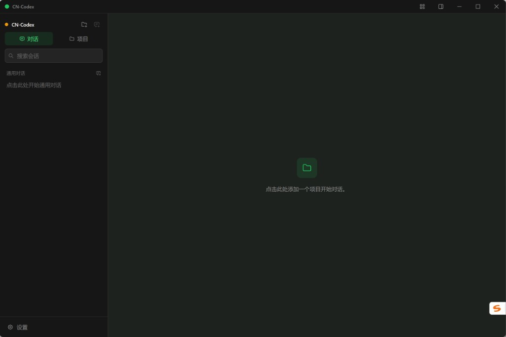
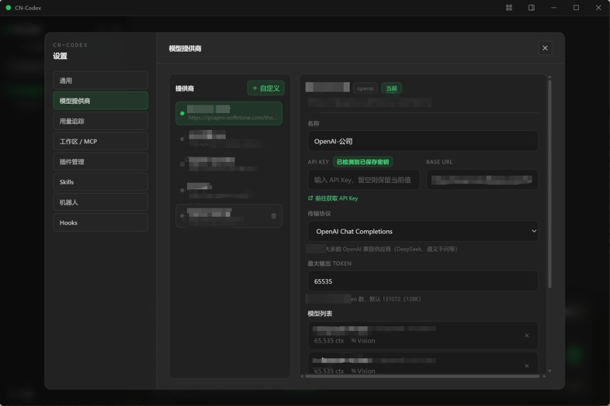
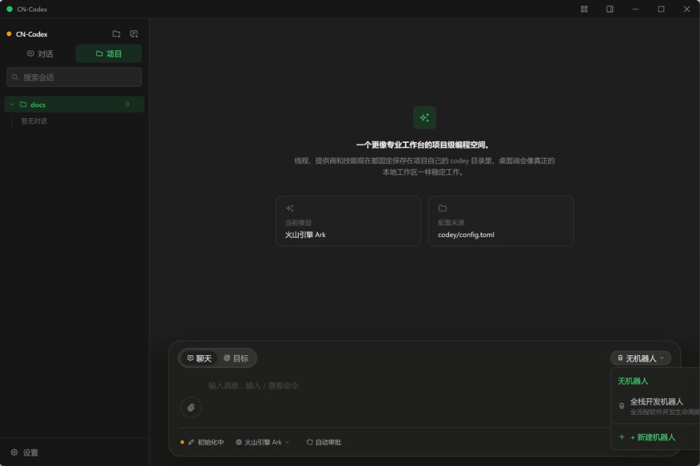
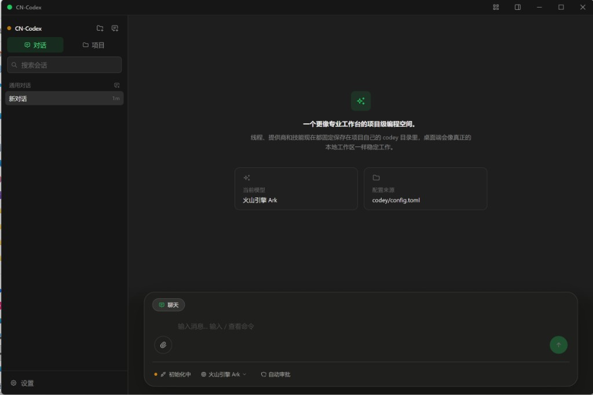

CN-Codex 使用指南
从首次启动到高级功能的全面说明
概述
CN-Codex 是一款基于 Tauri 2 + React 构建的桌面 AI 编程助手。它内置 Agent 引擎，直接通过 HTTP SSE 与 LLM API 通信，无需依赖外部 CLI 进程。
核心能力：
- 支持 12+ 种 LLM 供应商（OpenAI、Anthropic、Google、DeepSeek、火山引擎、通义千问、智谱、Moonshot、硅基流动、百川、Ollama、LM Studio 等）
- 40+ 内置工具（文件、Shell、浏览器、子代理、记忆、MCP、图像等）
- 项目级工作区管理，每个项目拥有独立的对话上下文
- Goal 目标模式，AI 自主多步执行任务
- 可扩展的插件、技能、Hooks 和机器人系统
- 手机扫码同步对话
首次启动
1. 启动应用
双击 CN-Codex.exe 启动。首次启动会在同目录创建 codey 运行时文件夹。

首次启动界面：左侧对话/项目切换，中间引导添加项目
2. 观察状态指示灯
左上角 CN-Codex 标题旁有一个小圆点：
- 绿色 — 引擎就绪，可以发送消息
- 黄色闪烁 — 正在初始化
- 红色 — 初始化失败（此时会出现「重试」按钮）
3. 配置第一个供应商
点击侧边栏底部的 设置 按钮 → 进入 模型提供商 标签页 → 点击 添加供应商，从预设列表中选择一个（如 DeepSeek、OpenAI 等），填写 API Key 和 Base URL，保存后点击 启用。

供应商设置面板：左侧实例列表，右侧配置表单，底部模型列表
在「模型列表」区域填写模型名称后，必须先点击右侧的 绿色 + 按钮 将模型添加到列表，然后再点击底部的 保存 按钮。如果填了模型信息但没有点 +，保存时会提示你先添加。
4. 添加第一个项目
在侧边栏头部点击 文件夹+ 按钮（添加项目），选择你要操作的代码目录。添加后 AI 在该目录下执行 Shell 命令和文件读写。
5. 运行时目录结构
codey/
├── config.toml # 主配置文件
├── sessions/ # 会话持久化（每个对话一个 .jsonl）
├── skills/ # 技能指令文件（SKILL.md）
├── plugins/ # 插件目录
├── robots/ # 机器人配置
├── memories/ # AI 记忆存储
└── usage.db # Token 用量统计（SQLite）界面布局
CN-Codex 主界面分为四个区域：
- 标题栏（最顶部） — 拖拽移动窗口、二维码、右侧面板开关、窗口控制（最小化 / 最大化 / 关闭）
- 侧边栏（左侧 256px） — 项目列表、通用对话、会话管理、搜索、设置入口
- 聊天区域（中间主体） — 消息列表 + 底部输入栏
- 右侧面板（可选） — 三个标签页：Browser（内嵌浏览器）、Project（文件树）、Terminal（终端）
「项目」与「对话」的区别
这是 CN-Codex 最重要的组织概念。
项目
项目 = 一个本地文件夹。通过侧边栏添加后，CN-Codex 以该目录为工作根路径。每个项目下可以创建多个对话。

项目对话界面：左侧「项目」标签页已选中，底部可见聊天/目标切换和机器人选择器
- 支持 目标模式（Goal）和 聊天模式（Chat）切换
- 支持 机器人（Robot）选择
- 右侧面板可浏览该项目的 文件树
- AI 执行 Shell 命令时，工作目录为该项目文件夹
- 移除项目会同时清除该项目下的所有对话
通用对话
不绑定任何项目的独立对话区域，适合泛聊、翻译、写作等不涉及代码工程的场景。
- 只有 聊天模式，不支持目标模式
- 不支持机器人选择
- 右侧文件树不适用
- 工作目录为应用根目录或用户 Home 目录
| 特性 | 项目对话 | 通用对话 |
|---|---|---|
| 工作目录 | 项目文件夹 | 应用根目录 / 用户 Home |
| 目标模式 | 支持 | 不支持 |
| 机器人 | 支持 | 不支持 |
| 文件树 | 支持（右侧面板） | 不适用 |
| 典型用途 | 项目级编程辅助 | 问答、翻译、写作 |
聊天模式
默认的对话模式。你发一条消息，AI 回复一条消息，必要时会自动调用工具（读文件、执行命令等）。每次操作需要你手动审批（除非开启了自动审批）。

通用对话聊天模式：仅显示「聊天」标签，底部状态栏有连接状态、模型选择器、自动审批开关
在项目对话的输入栏左上方可以看到 聊天 / 目标 切换按钮，点击 聊天 即为此模式。通用对话下只有聊天模式，没有切换按钮。
目标模式（Goal）
仅在项目对话中可用。设置一个目标后，AI 自主多步执行，不需要你一轮一轮地手动发送消息。
启用方式
- 在输入栏切换到 目标 标签，然后输入目标内容发送
- 或直接输入
/goal set 你的目标描述
目标状态
输入栏右侧的徽章显示当前目标状态：
| 状态 | 含义 |
|---|---|
active | AI 正在自主执行中 |
paused | 已暂停（点停止或用 /goal pause） |
blocked | 遇到需要用户介入的问题 |
complete | 目标已完成 |
budgetLimited | Token 预算用完 |
usageLimited | 用量限制触发 |
Goal 命令
| 命令 | 说明 |
|---|---|
/goal 或 /goal show | 查看当前目标状态和 Token 用量 |
/goal set 描述 | 设置新目标并开始执行 |
/goal edit 新描述 | 修改目标内容（不输入描述会自动填入旧目标供编辑） |
/goal pause | 暂停执行 |
/goal resume | 恢复执行 |
/goal clear | 清除目标并回到聊天模式 |
Token 预算
可以限制目标执行时的最大 Token 消耗：
/goal set --tokens=50k 重构这个模块的错误处理逻辑支持 k（千）和 m（百万）后缀。
机器人（Robot）
机器人是由 AI 自动创建的专业角色，每个机器人有自己的名称、描述、技能和工作流配置。选中机器人后发送的消息会自动以目标模式运行。
使用方法
- 在项目对话的输入栏上方点击 机器人下拉菜单（显示「无机器人」）
- 选择已有机器人，或点击 + 新建机器人
- 新建时在输入框中描述你想要的机器人功能，AI 会自动创建
- 选中机器人后，后续发送的消息都将由该机器人角色处理
修改机器人
选中一个机器人后，输入 /modify，然后在输入框中描述要修改的内容即可。
管理机器人
设置面板 → 机器人 标签页可以查看所有机器人的详情（技能、工作流步骤），也可以删除不需要的机器人。
标题栏
最顶部的窄条，从左到右依次是：
| 元素 | 说明 |
|---|---|
| 绿色圆点 + CN-Codex 文字 | 品牌标识，同时是 拖拽区域（按住拖动可移动窗口，双击可最大化/还原） |
| 二维码按钮 | 弹出 QR Code 浮窗，手机扫码后可在手机浏览器上同步查看对话 |
| 侧边面板按钮 | 切换右侧面板的显示/隐藏（默认是 Project 文件树标签页） |
| 最小化 | 最小化窗口到任务栏 |
| 最大化 | 最大化 / 还原窗口 |
| 关闭 | 关闭应用（鼠标悬停变红） |
聊天区域
空状态
没有消息时显示欢迎信息，包括：
- 应用标题和描述
- 当前使用的 模型名称 卡片
- 配置来源（codey/config.toml 路径）卡片
如果没有选中任何项目，整个区域显示「点击此处添加一个项目开始对话」引导。
消息列表
- 用户消息和 AI 消息交替显示，支持 Markdown / GFM 渲染 和 代码高亮
- AI 回复时有 流式输出光标，实时显示生成内容
- 工具调用显示为 可展开的卡片（命令名、参数、输出内容）
- 一轮对话结束后显示 运行摘要卡片（耗时、Token 用量、修改的文件列表，可点击在资源管理器中打开）
复制全部按钮
消息列表顶部右侧的复制按钮可以将整个对话内容复制到剪贴板。
输入栏
位于聊天区域底部，是最核心的交互区域。
模式切换（仅项目对话）
左上方有一个 聊天 / 目标 胶囊切换器：
- 聊天 — 普通一问一答模式
- 目标 — 设置目标后 AI 自主多步执行
通用对话下固定显示「聊天」标签，无法切换。
机器人选择器（仅项目对话）
模式切换器右侧的下拉按钮，可选择：
- 无机器人 — 默认状态
- 已创建的机器人列表（显示名称和描述）
- + 新建机器人 — 在输入框中描述后发送即可创建
Goal 状态徽章
目标模式下且未选择机器人时，右侧会显示当前目标的状态徽章（进行中 / 已暂停 / 预算受限 等）。
附件预览区
已添加的附件显示在输入框上方，每个附件卡片显示文件名、大小，图片附件有缩略图。悬停时出现删除按钮。
主输入框
| 操作 | 快捷键 |
|---|---|
| 发送消息 | Enter |
| 换行 | Shift + Enter |
| 触发斜杠命令 | 输入 / 开头 |
| 关闭弹出面板 | Esc |
左侧按钮 — 附件
回形针按钮，点击打开文件选择器。支持图片（image/*）和文档（.pdf, .md, .txt, .docx, .doc, .csv, .json, .yaml, .yml, .toml, .xml, .html）。也支持从右侧文件树 拖拽文件 到输入框。
右侧按钮 — 发送 / 停止
- 绿色圆形箭头 — 发送消息（输入为空或禁用时变灰）
- 红色圆形方块 — 流式输出中或目标运行中时显示，点击可中断
底部状态栏
输入框下方的小字区域，从左到右：
| 元素 | 说明 |
|---|---|
| 连接状态 | 绿点 + 「就绪」 或 黄色闪烁 + 「初始化中」 |
| 模型选择器 | 点击弹出模型列表，可在已配置的模型间切换。如果没有配置模型，点击会打开设置面板 |
| 自动审批开关 | 点击切换。开启后除「用户输入请求」外，所有审批自动通过 |
| 当前工作目录 | 显示项目文件夹名称（仅选中项目时显示） |
右侧面板
通过标题栏的侧边面板按钮切换显示/隐藏。面板顶部有三个标签页可切换：
Browser（浏览器）
内嵌 WebView 浏览器，由 AI 的 browser_run 工具控制。当 AI 需要访问网页（如打开 URL、点击元素、截图等）时，页面会在此面板中实时渲染。顶部显示当前 URL 和状态信息。
Project（文件树）
- 展示当前项目目录的文件结构
- 顶部有 刷新 和 在资源管理器中打开 两个按钮
- 点击目录展开/折叠
- 点击文件可 预览（Markdown 渲染 / 代码高亮）
- 右键菜单：加入对话（作为附件）/ 在资源管理器中打开
- 可以 拖拽文件到输入框，自动读取内容作为附件
Terminal（终端）
内置真实的交互式终端面板，基于 xterm.js 实现。可以直接在 CN-Codex 内操作系统命令行，无需切换到外部终端窗口。
主要功能
- 多标签页 — 支持同时打开多个终端会话，每个标签页独立运行一个 Shell 进程
- 自动定位 — 如果当前选中了项目，新建终端的工作目录自动设为该项目文件夹
- 系统原生 Shell — Windows 下为 PowerShell / CMD，Linux / macOS 下为默认 Shell
- 实时输出 — 通过 PTY（伪终端）技术，支持完整的终端交互，包括颜色高亮、光标移动、快捷键等
- 自适应大小 — 面板大小变化时自动调整终端行列数
操作说明
| 操作 | 说明 |
|---|---|
| 新建终端 | 点击标签栏右侧的 + 按钮，创建新的终端标签页 |
| 切换终端 | 点击不同的标签页在多个终端会话间切换 |
| 关闭终端 | 点击标签页上的 × 按钮，关闭该终端会话 |
| 输入命令 | 直接在终端中键入命令并回车执行 |
此终端面板是供你手动操作的系统终端，与 AI 自动执行的 Shell 工具相互独立。你可以在终端中手动运行编译、测试、Git 等命令，同时 AI 在聊天区域中并行工作。
审批弹窗
当 AI 需要执行敏感操作（执行命令、修改文件、请求权限等）或向你提问时，会弹出审批弹窗。
审批类型
- 命令执行审批 — 显示要执行的命令内容
- 文件修改审批 — 显示要修改的文件和补丁内容
- 权限请求 — 请求额外操作权限
- 用户输入 — AI 向你提问，可能有多选/文本输入选项
操作
- 批准 — 允许 AI 执行该操作
- 拒绝 — 拒绝该操作
多条审批请求会排队，依次处理。
输入栏底部的「自动审批」开关打开后，除 request_user_input（AI 提问需要你回答的场景）外，其他审批都会自动通过。
配置文件
主配置文件位于 codey/config.toml，包含以下核心字段：
# 当前模型 ID
model = "l-deepseek-v4-flash"
# 供应商标识（对应 [model_providers.xxx] 中的 key）
model_provider = "openai"
# 推理强度：low / medium / high / xhigh
model_reasoning_effort = "medium"
# 单次最大输出 token 数
max_output_tokens = 65535
# 审批策略：on-request / on-failure / untrusted / never
approval_policy = "on-request"
# 联网搜索：live / cached / disabled
web_search = "live"
# 额外系统指令（可选）
# instructions = "回复使用中文"
# 上下文压缩阈值（可选）
# model_auto_compact_token_limit = 115000
# 移动端中转服务器（可选）
# relay_server_url = "http://your-server.com:8080"
# ─── 供应商配置 ───
[model_providers.openai]
base_url = "https://api.openai.com/v1"
experimental_bearer_token = "sk-..."
wire_api = "chat" # chat / responses / anthropic / google
requires_openai_auth = true
[model_providers.deepseek]
base_url = "https://api.deepseek.com"
experimental_bearer_token = "sk-..."
wire_api = "chat"
requires_openai_auth = false
[model_providers.zhipu]
base_url = "https://open.bigmodel.cn/api/paas/v4"
experimental_bearer_token = "your-key.here"
wire_api = "chat"
requires_openai_auth = false
# ─── MCP 服务配置 ───
[mcp_servers.filesystem]
command = "npx"
args = ["-y", "@modelcontextprotocol/server-filesystem", "/path"]
# ─── Hooks 配置 ───
[hooks]供应商配置推荐通过设置面板的 GUI 操作，而非手动编辑 TOML。GUI 会自动处理字段格式和验证。
供应商配置
CN-Codex 内置 12+ 种供应商预设模板：
| 分类 | 供应商 | 传输协议 (wire_api) |
|---|---|---|
| 全球服务 | OpenAI | chat 或 responses |
| Anthropic | anthropic | |
| Google Gemini | ||
| 国内服务 | DeepSeek | chat |
| 火山引擎 Ark | chat | |
| 通义千问 | chat | |
| 智谱 AI | chat | |
| Moonshot | chat | |
| 硅基流动 / 百川 | chat | |
| 本地运行 | Ollama | chat |
| LM Studio | chat |
传输协议说明
chat— 标准 OpenAI Chat Completions 格式，适用于大多数 OpenAI 兼容供应商responses— OpenAI Responses API 格式anthropic— Anthropic Claude 原生 API 格式google— Google Gemini 原生 API 格式
供应商面板操作流程
- 设置 → 模型提供商 → 点击 添加供应商
- 从预设列表选择类型（同一类型可创建多个实例）
- 填写 名称、API Key、Base URL、默认模型 ID
- 选择 传输协议（大多数国内供应商选 chat）
- 可选：设置 推理强度、联网搜索、最大输出 Token
- 点击 保存
- 点击实例右上角的 启用 按钮将其设为默认供应商
模型列表
每个供应商可以配置多个模型。在供应商面板底部的「模型列表」区域添加模型 ID 和显示名称。如果模型支持图片分析，勾选 支持图片/视觉。添加后可在输入栏底部的模型选择器中快速切换。
审批策略
| 策略 | 说明 |
|---|---|
on-request | 每次操作都需审批（推荐，最安全） |
on-failure | 仅失败时需审批 |
untrusted | 仅不可信操作需审批 |
never | 始终自动执行，不弹审批 |
never 策略会自动执行所有命令和文件修改，仅在可信且受控的环境中使用。
除了配置文件中的全局策略，输入栏底部的 自动审批开关 也可以临时覆盖审批行为。
MCP 服务配置
MCP（Model Context Protocol）允许连接外部工具服务器来扩展 AI 能力。
在 config.toml 中配置
# stdio 类型
[mcp_servers.filesystem]
command = "npx"
args = ["-y", "@modelcontextprotocol/server-filesystem", "/path"]
# HTTP 类型
[mcp_servers.my-api]
url = "http://localhost:8080/mcp"
# 可选字段
# type = "stdio"
# cwd = "/working/dir"
# env = { FOO = "bar" }
# headers = { Authorization = "Bearer xxx" }
# disabled = false通过设置面板导入
设置 → 工作区 / MCP → 点击 导入 JSON，粘贴 MCP 配置 JSON 即可批量添加。格式为：
{ "server-name": { "command": "...", "args": ["..."] } }设置 — 通用
- 语言 — 中文 / English 切换
- 主题 — 深色 / 浅色 / 跟随系统
- Web 服务（手机同步） — 开关控制，开启后在局域网起 HTTP + WebSocket 服务，手机扫码访问
- 中转服务器 — 配置公网 relay 地址后，手机无需与 PC 在同一局域网。留空使用直连模式
设置 — 模型提供商
左右分栏布局：左侧是供应商实例列表，右侧是选中实例的配置表单。详见上方供应商配置章节。
设置 — 用量追踪
显示 Token 使用统计，支持按 7 天 / 30 天 / 全部 时间范围筛选。包括：
- 总计输入/输出 Token 数
- 每日用量趋势
- 按模型分组的用量统计
设置 — 工作区 / MCP
查看当前运行时路径和已配置的 MCP 服务列表。显示的路径包括：配置文件路径、配置目录、技能目录、插件目录、工作目录。
MCP 服务支持删除和导入操作。
设置 — 插件管理
管理 codey/plugins/ 下的插件。每个插件包含 .codex-plugin/plugin.json 元数据文件。
- 启用/禁用 — 切换插件的激活状态
- 卸载 — 从磁盘移除插件目录
- 导入 Codex — 从本地 Codex CLI 的插件缓存（
~/.codex/plugins/cache）一键导入插件
设置 — Skills
查看 codey/skills/ 下的所有技能。每个技能是一个包含 SKILL.md 的文件夹。技能按分类展示：
- 代码审查
- GitHub / CI
- 浏览器 / 测试
- 项目工具
- 诊断 / 运维
- 文档 / 招标
- 多媒体 / 设计
点击技能可预览其内容。
设置 — 机器人管理
展示所有 AI 创建的机器人列表。每个机器人卡片显示：名称、描述、技能数量、工作流步骤数。点击可展开查看详细的技能列表和工作流配置。支持删除操作。
设置 — Hooks
查看已配置的自动化钩子。Hooks 在特定事件触发时自动执行命令：
| Hook 类型 | 触发时机 |
|---|---|
| onAgentStart | Agent 开始一个 turn 时执行 |
| onUserPromptSubmit | 用户提交消息时触发 |
| onAgentEnd | Agent 完成一个 turn 时执行 |
| onFileChange | Agent 修改文件时执行 |
| onCommandExec | Agent 执行命令前触发 |
| onPostToolUse | 工具执行完成后触发 |
| onSubagentStop | 子代理关闭时触发 |
Hooks 可在 codey/config.toml 的 [hooks] 部分或 hooks.json 中配置。
斜杠命令
在输入框中输入 / 会弹出命令面板，支持模糊搜索。
| 命令 | 说明 |
|---|---|
/plan | 让 AI 创建实现计划 |
/goal | 切换到目标模式（详见目标模式章节） |
/model | 打开设置面板 |
/clear | 清空当前对话的 UI 消息 |
/compact | 压缩对话上下文（当上下文过长时手动触发） |
/help | 显示帮助信息 |
/modify | 修改当前选中的机器人配置（仅在选中机器人时出现） |
附件功能
支持的文件类型
- 图片 — 所有 image/* 类型（需要模型支持视觉能力）
- 文档 — PDF、Word（.docx/.doc）、Excel（.xlsx/.xls）、PowerPoint（.pptx/.ppt）
- 文本 — Markdown、纯文本、CSV、JSON、YAML、TOML、XML、HTML
添加方式
- 点击输入框左侧的 回形针按钮，通过系统文件选择器添加
- 从右侧 文件树拖拽 到输入框区域
- 从系统文件管理器直接 拖放文件 到输入框区域
发送图片附件时，如果当前模型不支持视觉能力，会弹出警告提示。需要在供应商设置中为模型勾选「支持图片/视觉」，或切换到支持视觉的模型。
移动端
CN-Codex 内置 Web 服务，可以通过手机浏览器实时同步 PC 端的对话、查看 AI 回复、甚至直接从手机发送消息让 PC 上的 AI 执行任务。支持两种连接模式：局域网直连和公网中转。
局域网模式（手机和 PC 在同一 WiFi）
第一步：在 PC 端开启 Web 服务
- 点击侧边栏底部的 设置 按钮，进入 通用 标签页
- 找到「Web 服务（手机同步）」区域
- 点击 开关 打开 Web 服务
- 开启成功后，下方会显示局域网 URL（如
http://192.168.1.100:19527）
Web 服务默认使用端口 19527。如果该端口被占用，系统会自动分配可用端口。请确保防火墙允许该端口的入站连接。
第二步：手机扫码连接
- 在 PC 端点击标题栏右上角的 二维码按钮（QR 图标）
- 弹出窗口中会显示一个二维码和对应的 URL 地址
- 用手机的 相机 或任意 扫码 App（微信扫一扫、浏览器扫码等）扫描该二维码
- 手机浏览器会自动打开 CN-Codex 移动端页面
二维码按钮不会自动启动 Web 服务。如果未开启 Web 服务就点击二维码按钮，会提示「Web 服务未启动 — 请前往 设置 → 通用 开启 Web 服务」。必须先在设置中开启 Web 服务。
第三步：使用手机端
手机端页面功能包括：
- 顶部状态栏 — 显示「已连接」（绿色圆点）或「断开」状态，以及返回按钮
- 对话列表 — 显示 PC 端的最近 20 个对话，当前活跃的对话有高亮标记，如果 PC 端正在某个对话中，手机端会自动跳转到该对话
- 聊天界面 — 用户消息以气泡形式显示，AI 回复支持 Markdown 渲染和代码高亮，流式输出时有打字动画效果
- 工具调用卡片 — 当 AI 调用工具时，手机端显示工具名称卡片（如 shell、read_file 等）
- 发送消息 — 底部输入框可以直接发送消息，消息会传到 PC 端的 AI 引擎执行
手机端通过 WebSocket 保持实时连接。PC 端 AI 正在执行的任务、流式输出的回复内容，都会即时推送到手机。连接断开时会每 3 秒自动重连。
公网模式（中转服务器远程控制）
如果你的手机和 PC 不在同一局域网（例如在外面用手机远程控制家里的 PC），需要部署一台中转服务器（Relay Server）。
工作原理
中转服务器的通信架构如下：
手机浏览器 ←→ 中转服务器（公网） ←→ PC 端 CN-Codex
↑ ↑
访问 /m/{房间ID} WebSocket 连接到 /pc/{房间ID}
HTTP 请求代理到 PC 广播 Agent 事件给手机- PC 端启动 Web 服务时，与中转服务器建立 WebSocket 长连接，注册一个唯一的「房间 ID」
- 手机访问中转服务器的
/m/{房间ID}页面，加载移动端 SPA - 手机发送的 HTTP 请求由中转服务器代理转发给 PC 端处理
- PC 端的 AI 执行结果通过中转服务器广播给手机的 WebSocket 连接
- 断开时自动重连（PC 端 5 秒重试，手机端 3 秒重试）
中转服务器部署
CN-Codex 项目自带 relay-server 程序，部署到任意一台有公网 IP 的 Linux 服务器即可实现远程控制。
服务器要求
- 一台有公网 IP 的 Linux 服务器（阿里云、腾讯云、AWS 等均可）
- 开放 8080 端口（默认端口，可修改）
- 最低配置：1 核 1GB 内存足够（中转服务器只做消息转发，不运行 AI）
方案一：Windows 交叉编译 + 上传（推荐）
在你的 Windows 开发机上编译出 Linux 可执行文件，然后上传到服务器部署。
第一步：构建移动端前端
cd mobile-web
pnpm install
pnpm build构建完成后，项目根目录会生成 mobile-dist/ 文件夹，包含移动端 SPA 的静态文件。
第二步：交叉编译 Relay Server
进入 relay-server/ 目录，运行 publish.bat：
cd relay-server
publish.bat此脚本会：
- 使用
cargo-zigbuild或cross交叉编译出 Linux x86_64 的可执行文件 - 将编译产物、
mobile-dist/、部署脚本打包到relay-server/publish/目录
如果没有安装 cargo-zigbuild，先执行：
winget install zig.zig
cargo install cargo-zigbuild
第三步：上传到服务器
scp -r relay-server/publish/* root@你的服务器IP:/tmp/cn-codex-relay/第四步：在服务器上执行部署
ssh root@你的服务器IP
cd /tmp/cn-codex-relay
chmod +x deploy.sh
./deploy.shdeploy.sh 会自动完成以下步骤：
- 复制可执行文件到
/opt/cn-codex-relay/ - 复制
mobile-dist/静态文件 - 安装 systemd 服务单元
- 启动服务并设置开机自启
方案二：直接在服务器上编译
如果你的服务器本身有 Rust 开发环境，可以直接在服务器上编译。
第一步：上传源代码
# 上传 relay-server 目录和 mobile-web 目录到服务器
scp -r relay-server mobile-web root@你的服务器IP:/tmp/cn-codex-src/第二步：构建移动端前端
# 需要服务器有 Node.js 和 pnpm
cd /tmp/cn-codex-src/mobile-web
pnpm install && pnpm build
# 将 mobile-dist 放到 relay-server 目录下
cp -r ../mobile-dist /tmp/cn-codex-src/relay-server/mobile-dist第三步：一键编译+部署
cd /tmp/cn-codex-src/relay-server
chmod +x deploy/setup.sh
sudo ./deploy/setup.shsetup.sh 是全自动脚本，会自动安装 Rust（如需）、编译 release 版本、安装到 /opt/cn-codex-relay/、配置 systemd 服务、开放防火墙端口。
验证部署
# 查看服务状态
systemctl status cn-codex-relay
# 查看实时日志
journalctl -u cn-codex-relay -f
# 在浏览器中访问测试
curl http://你的服务器IP:8080/health如果使用阿里云、腾讯云等云服务器，除了系统防火墙，还需要在 云控制台的安全组 中添加入站规则，放行 TCP 端口 8080。否则外网无法访问。
服务管理命令
| 操作 | 命令 |
|---|---|
| 查看状态 | systemctl status cn-codex-relay |
| 重启服务 | systemctl restart cn-codex-relay |
| 停止服务 | systemctl stop cn-codex-relay |
| 查看日志 | journalctl -u cn-codex-relay -f |
| 开机自启 | systemctl enable cn-codex-relay（部署脚本已自动设置） |
在 PC 端配置中转服务器
服务器部署完成后，需要在 PC 端的 CN-Codex 中配置中转地址：
- 打开 CN-Codex → 设置 → 通用
- 找到「中转服务器（公网访问）」区域
- 填入服务器地址，格式为
http://你的服务器IP:8080 - 点击 保存
- 如果 Web 服务已开启，需要 关闭后重新开启 Web 服务才能生效
- 重新开启后，二维码将指向中转服务器地址（如
http://你的服务器IP:8080/m/xxxxxxxxxxxx）
如果将「中转服务器」地址清空并保存，重新开启 Web 服务后会恢复局域网直连模式，二维码指向本机局域网 IP。
手机远程使用流程
配置完成后，使用流程与局域网模式完全一致：
- 确保 PC 端 Web 服务已开启（且配置了中转服务器地址）
- 点击标题栏的 二维码按钮
- 手机扫描二维码（此时 URL 指向公网中转服务器）
- 手机浏览器打开移动端页面，即可远程查看和操作 PC 上的 AI 对话
此时手机无需与 PC 在同一网络。你可以在外出时用手机监控 AI 执行情况，或直接从手机发送新指令让 PC 上的 AI 处理。
通过配置文件设置中转地址
除了在设置面板 GUI 中配置，也可以直接编辑 codey/config.toml：
# 中转服务器地址（不需要尾部斜杠）
relay_server_url = "http://你的服务器IP:8080"保存后重启 Web 服务即可生效。
内置工具一览
AI 在对话中会根据需要自动调用这些工具。
文件与目录
read_file | 读取文件内容 |
write_file | 创建或覆盖文件 |
list_directory | 列出目录内容 |
apply_patch | 应用多文件补丁（增/改/删） |
命令执行
shell / shell_command | 执行一次性 Shell 命令 |
exec_command | 启动持久交互式会话 |
write_stdin | 向持久会话发送输入 |
close_exec_session | 关闭持久会话 |
浏览器
browser_run | 运行浏览器自动化（goto / click / fill / screenshot / eval 等操作） |
子代理
spawn_agent | 启动子代理并行处理任务 |
wait_agent | 等待子代理完成 |
send_input | 向子代理发送消息 |
resume_agent | 恢复子代理 |
list_agents | 列出所有子代理 |
close_agent | 关闭子代理 |
记忆
memory_list / read / search / write / update / forget | 跨对话持久化存储键值对 |
MCP
mcp_list_servers | 列出 MCP 服务器 |
mcp_call_tool | 调用 MCP 工具 |
mcp_read_resource | 读取 MCP 资源 |
其他
code_review | 审查代码变更 |
update_plan | 更新执行计划 |
tool_search | 搜索可用工具 |
view_image | 查看图像文件 |
image_generate | AI 生成图像 |
web_search | 联网搜索 |
web_fetch | 抓取网页内容 |
request_user_input | 向用户提问 |
request_permissions | 请求额外权限 |
robot_save | 保存/创建机器人 |
常见问题
Q: 如何切换语言？
设置 → 通用 → 语言，支持中文和英文。
Q: 如何切换深色/浅色主题？
设置 → 通用 → 主题，可选深色、浅色或跟随系统。
Q: 对话数据存在哪里？
codey/sessions/ 目录，每个对话一个 .jsonl 文件。
Q: Token 用量怎么查看？
设置 → 用量追踪，可按 7 天 / 30 天 / 全部查看。数据存在 codey/usage.db SQLite 文件中。
Q: 初始化失败怎么办？
检查供应商配置是否正确（API Key、Base URL）。状态灯变红时，侧边栏会出现「重试」按钮，聊天区域会出现「打开设置」按钮。
Q: 图片附件发送后提示不支持？
需要当前模型支持视觉能力。在供应商设置中为对应模型勾选「支持图片/视觉」，或切换到其他支持视觉的模型。
Q: 项目与通用对话有什么区别？
项目绑定本地文件夹，支持目标模式和机器人，AI 在该目录下工作。通用对话不绑定目录，仅支持普通聊天。详见项目与对话章节。
Q: 自动审批和配置文件中的 approval_policy 有什么关系？
approval_policy 是全局策略，控制哪些操作需要审批。输入栏底部的「自动审批」开关是一个临时覆盖——开启后除了 AI 主动提问（request_user_input）的场景，其他审批都自动通过。
Q: 如何让 AI 使用 /plan 和 /compact？
在输入框中输入 /plan 后选择命令，AI 会制定实现计划。输入 /compact 会触发上下文压缩，当对话过长导致模型上下文窗口接近满时使用。
Q: 支持哪些操作系统？
目前主要支持 Windows 10 及以上版本。